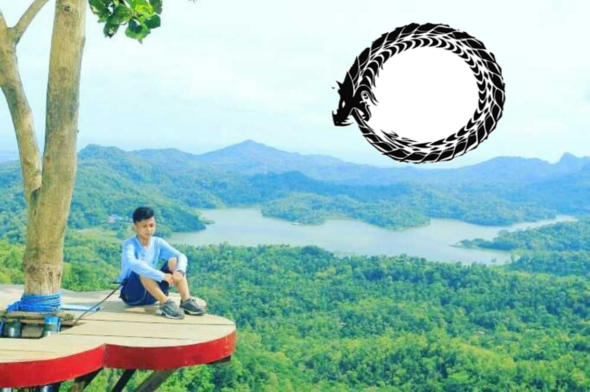
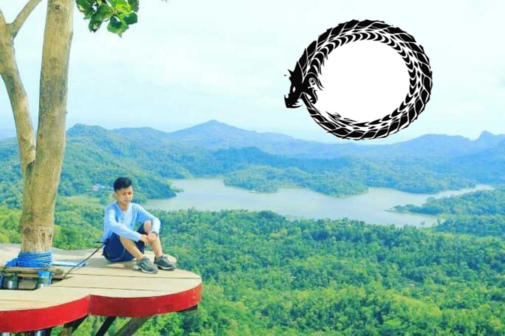

School Experience
Jun 2016 - Sekarang
Saya Mengenal Smakbo dari teman saya yang juga ingin masuk ke SMAKBO, dan saya mengikuti penerimaan jalur tes tertulis. Saya mendaftar melalui sekolah karena sekolah saya memfasilitasi. Jadi saya tidak terlalu sulit untuk mengurus pendaftaran. Saat menjelang ujian tertulis saya tidak memiliki persiapan sama sekali hanya belajar sedikit dan mengandalkan ingatan sisa ujian nasional. Tetapi Allah Maha Tahu apa yang baik untuk hambanya, akhirnya saat pengumuman saya sendiri tidak berharap masuk karena usaha yang kurang maksimal tapi tuhan berkehendak lain akhirnya saya diterima masuk SMAKBO dan harus melalui test selanjutnya yaitu test kesehatan. Saya tidak memiliki masalah dalam kesehatan hanya memiliki beberapa penyakin keturunan yang diturunkan oleh Kakek kepada saya melalui Ibu saya.
Education
Taman Kanak - Kanak Islam Terpadu
2005 - 2007
Saya pertama kali memasuki dunia pendidikan yaitu pada tahun 2005. Pada saat itu saya bersekolah disalah satu TK Islam. Disana saya mendapat pendidikan paling dasar. Dimulai dari menulis, membaca, berhitung dan bermain. Taman Kanak - Kanak adalah tempat edukasi dengan cara bermain. Disana saya mulai mendapat teman dan hingga sekarang saya memiliki teman dekat. Dia adalah teman yang cukup baik dari dulu hingga sekarang.
SDN Pabuaran 03
2007 - 2013
Kemudian saya melanjutkan sekolah ke tingkat yang lebih tinggi. Sekolah dasar adalah aplikasi pembelajaran yang telah diterapkan atau didapatkan dari TK. Sekolah Dasar adalah permulaan dari pembelajaran yang lebih sulit dan mulai mengenal apa makna dari kata PR. Ada satu pelajaran yang dari SD hingga sekarang SMK saya sama sekali tidak paham yaitu Bahasa Sunda. Bagi saya bahasa sunda adalah kutukan paling menyeramkan karena materi yang sedikitpun tidak saya mengerti. Saat dulu mendapat PR Bahasa Sunda saya selalu bingung ingin mengisi apa dari pertanyaan yang saya sendiri saja tidak dapat mengerti.
Untuk tingkatan selanjutnya yaitu SMP. Setelah SD saya tidak kepikiran akan masuk kemana untuk melanjutkan pendidikan karena saya masih terlalu asik bermain games pada saat itu. Akhirnya Ibu saya yang memilihkan sekolah untuk saya dan saya hanya setuju setuju saja dengan pilihannya. Di SMP saya baru boleh membawa motor untuk ke sekolah yaitu kelas 2 . Karena ibu yang terlalu khawatir akan emosi saya yang sewaktu sewaktu dapat meluap. Ia tidak ingin terjadi hal - hal yang tidak menyenangkan kepada saya. Semenjak saya dapat membawa motor sudah terhitung 3 kali saya terjatuh dan menyebabkan luka yang cukup parah. Luka paling parah terjadi saat saya ingin berangkat sekolah ke SMAKBO diperjalanan terjadi insiden yang cukup parah. Akhirnya lutut saya mengalami luka yang cukup parah tetapi saya tetap melanjutkan sekolah dan mengikuti jam pertama dengan kaki yang masih penuh dengan darah. Setelah jam pertama baru saya mengobati luka ke poloklinik yang terdapat disekolah.
 ; ;
; ;